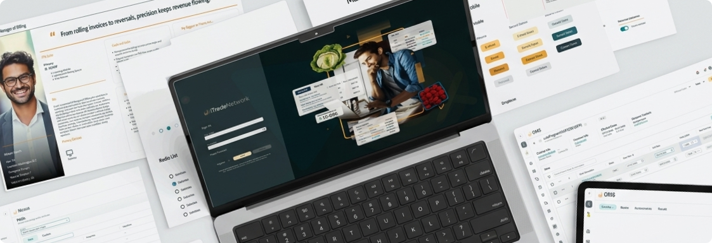

Redesigning Revenue Recovery at Scale
How a unified invoicing experience helped Sodexo reclaim $4.5M in manual revenue and return 202 hours annually to finance teams.

About the Product
RevUp is iTradeNetwork's B2B SaaS platform powering the supply chain finance operations of large food service operators like Sodexo. At its core, RevUp manages Volume Driven Allowances (VDA) — the rebates manufacturers pay distributors based on purchase volume — and the invoicing workflows that turn those allowances into recovered revenue.
The platform serves a diverse set of users: finance directors, invoice managers, POS analysts, and data stewards — each with distinct workflows, data needs, and pain points. When I joined the RevUp redesign effort, the legacy system was holding all of them back.
The Problem
The existing platform was built for a different era. Legacy screens were dense, disconnected, and organized around system logic rather than user workflows. Finance teams were spending hours each billing cycle doing work the system should have done for them.
might we unify the VDA Calculation and Invoice screens so finance analysts can reconcile data without switching between disconnected views?
might we design a 13-month rolling billing layout that replaces a rigid, period-bound process with clear, continuous visual states?
might we handle delayed POS data automatically so analysts aren't manually tracking catch-up invoices across multiple billing cycles?
might we split consolidated invoices into separate billing entities without losing data fidelity or creating reconciliation errors?
Discovery
Before touching a screen, I embedded with Sodexo finance users and ops teams to understand how invoices actually moved through the business. I also conducted a full heuristic evaluation of the legacy CaRMA platform, scoring it across Nielsen's 10 usability heuristics.
If I don't catch the errors here, we could be double-paying on the same business.
We need instant clarity — every extra click costs our analysts valuable time.
Personas
I developed four targeted personas grounded in real interviews and workflow observations.
- Repetitive manual downloads and re-uploading to Collaboration Portal
- Memory-driven checks with no central watchlist for direct-deal customers
- Catch-up invoices create huge spikes in review work
- No visibility into invoice status after it leaves her desk
- Too many clicks and manual lookups to find key data
- Analysts frequently export to Excel for basic sorting
- Context isn't persistent — hard to remember which contract is being viewed
- Late supplemental releases require manual requeuing and validation
- Difficulty determining whether data feeds are complete and correct
- Lack of visibility into which distributor files should have been received
- Unclear alerts with no actionable insights about erroneous feeds
- No forecasting for inbound file volumes based on historical trends
- Bulk upload tool fails unpredictably over ~50 records
- Validation errors don't identify which specific line is wrong
- Duplicate customer numbers cause downstream invoice failures
- No consolidated validation view before nightly jobs run
Design Process
Finance users don't just need a usable interface — they need to trust the data they're looking at. Each major feature went through 3–5 iteration cycles depending on complexity.
Embedded with Sodexo finance users and ops teams. Conducted stakeholder interviews, workflow mapping, and a full heuristic evaluation of the legacy CaRMA platform.
Finance domain complexity required deep collaboration with SMEs. Concepts like "Invoice Period vs. Created Month" weren't just terminology — getting them wrong produced incorrect audit outputs.
Consistent column structures, explicit period labels, disabled states that explain why something is unavailable. Every tooltip was a trust signal, not just a label.
Worked closely with engineering through implementation — reviewing builds for design fidelity, flagging regressions before QA, and updating specs as edge cases surfaced.
What We Delivered
Two major releases shipped in the first half of 2026, with two more scoped for August.
A continuous billing view replacing a rigid period-bound process with clear visual states (Pre-Invoice → New → Invoiced → Stopped).
Late POS data automatically reconciled against prior periods — eliminating manual tracking that previously required dedicated ops effort every billing cycle.
User flows for splitting consolidated invoices into separate BE and Sodexo invoices, keeping high-density financial data readable.
Calculation and Invoice tabs designed in sync — same data model, same terminology, same filters — eliminating reconciliation errors by design.
Multi-tiered drilldown dashboard with visual status indicators and health thresholds. Approved by QA ahead of August deployment.
Outcomes
85% faster per billing cycle. Finance teams moved from an hour of manual reconciliation to a 10-minute review.
Across 242 invoices per year — over a full month of capacity returned to the team.
Split-invoice layouts and guardrails helped secure access to manual revenue previously at risk.
The design work on RevUp didn't just improve a screen — it changed how our team thinks about invoice reconciliation. For the first time, we're operating proactively instead of reactively.
Translating complex, multi-tiered business requirements into clear step-by-step user flows significantly reduced implementation ambiguity and rework on our end.
Interested in working together?
I'm open to senior product design roles in B2B SaaS, enterprise tools, and complex data-heavy domains.